I.E. INEM José Félix de Restrepo · 11-10 · Medellín · 21 de julio de 2026
Hinduismo 4.000 años de historia
La religión viva más antigua del mundo, contada en orden: desde el año 2600 antes de Cristo hasta lo que pasó el año pasado.
- Santiago Bolívar
- Juan José Villa
- Jerónimo Uribe
- Dulce María Gómez
- Paulina Gómez
- Isabel Madrigal
Escena 02
¿Qué es el hinduismo?
No es una religión con un fundador y un libro, como el cristianismo o el islam. Es un conjunto enorme de tradiciones que creció durante miles de años en India.
1.200
millones de hindúes en el mundo
4.ª
religión más grande del planeta
95%
de ellos vive en India
No hay un profeta que la haya empezado. Se fue formando sola, poco a poco.
No tiene una Biblia única ni un Papa que decida qué es lo correcto.
«Hindú» era como los de otros países llamaban a la gente que vivía al otro lado del río Indo. Ellos la llaman sanatana dharma.
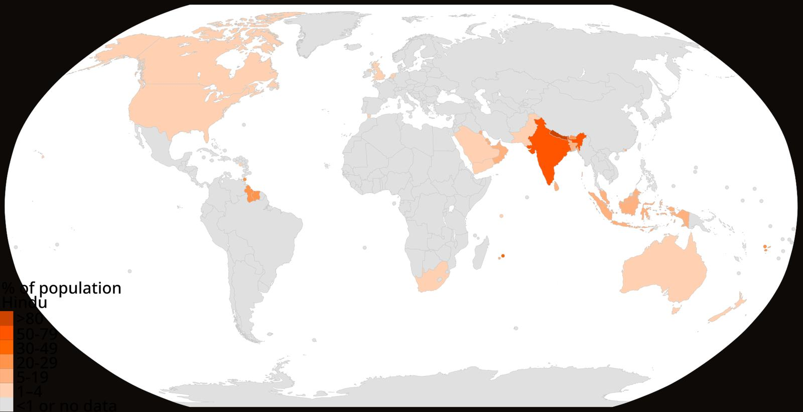
Países según su porcentaje de población hindú. En verde oscuro, India y Nepal.
Escena 03 · Hace 4.600 años
Cómo empezó todo
Primero hubo ciudades. Después llegaron unos himnos que se aprendían de memoria. De ahí sale todo lo demás.
Ciudades enormes junto al río Indo, con alcantarillado y baños públicos. Se llaman Mohenjo-daro y Harappa.
Aparecen los Vedas: cuatro colecciones de himnos en sánscrito. Nadie los escribió durante siglos: se pasaban de boca en boca, memorizados.
La religión de esa época era ofrecer sacrificios al fuego. Todavía no existían los templos ni las estatuas de dioses.
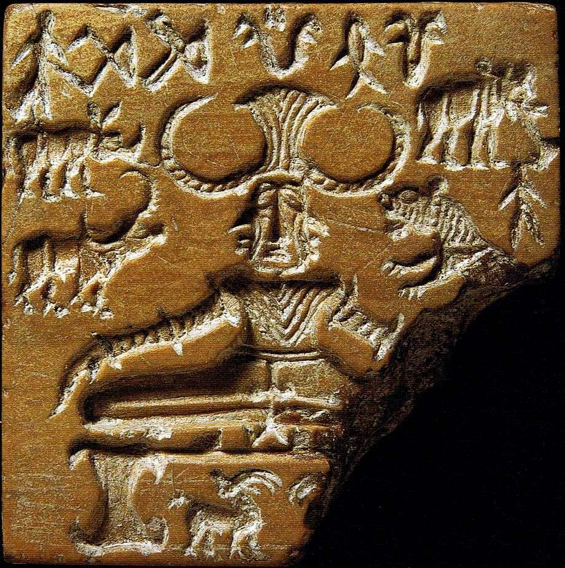
Lo que no se sabe. En ese sello hay una figura sentada que algunos creen que es el dios Shiva. No está comprobado. La escritura del Indo nunca se ha logrado descifrar, así que nadie puede leer qué decía.
Escena 04 · Hace 2.800 años
Cinco palabras
explican casi todo
Unos textos llamados Upanishads dejaron de preguntar «¿a quién le ofrezco?» y empezaron a preguntar «¿quién soy yo?». Ahí nace el vocabulario que el hinduismo usa hasta hoy.
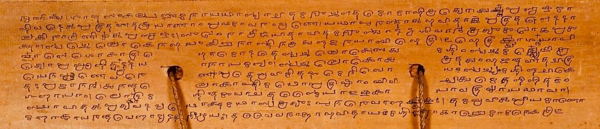
Manuscrito del Katha Upanishad, en escritura grantha.
Lo que sostiene todo lo que existe. La realidad de fondo.
Tu «yo» verdadero, el de adentro. No es tu cuerpo ni tu personalidad.
Naces, mueres y vuelves a nacer. Una y otra vez, sin parar.
Todo lo que haces tiene consecuencias, y esas consecuencias deciden cómo vuelves a nacer.
Salirse de esa rueda para siempre. Esa es la meta final del hinduismo.
Escena 05 · Entre el año 400 a.C. y el 400 d.C.
Dos historias gigantes
Son como el «Señor de los Anillos» del hinduismo, pero además enseñan cómo hay que vivir. De aquí sale la palabra dharma: lo correcto que a cada quien le toca hacer.
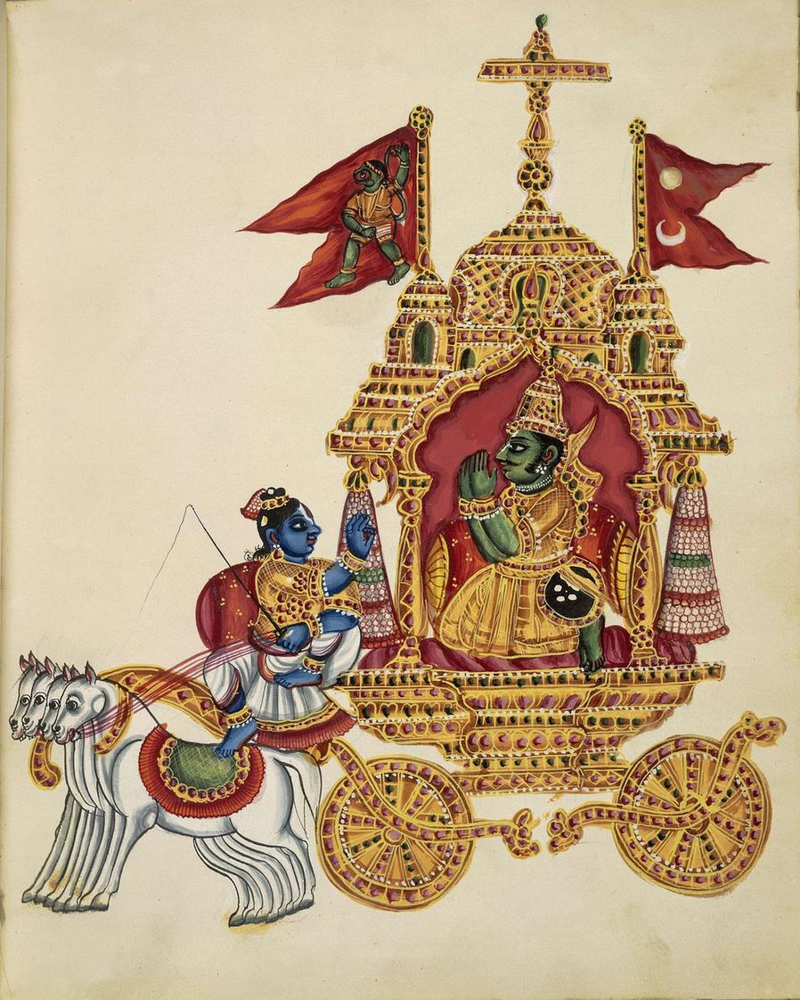
Un guerrero, Arjuna, se paraliza antes de la batalla: al frente están sus propios primos. El dios Krishna le responde. Esa conversación es la Bhagavad Gita, el texto hindú más leído del mundo.
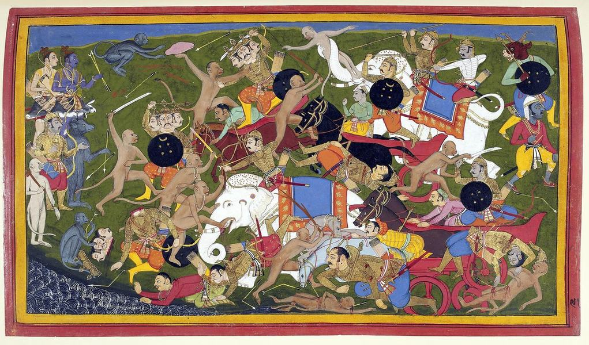
Al príncipe Rama lo destierran, le secuestran a su esposa Sita y él la rescata. Se cuenta como ejemplo de lealtad y de cumplir la palabra. Es la historia que se celebra cada año en la fiesta de Diwali.
Para dimensionarlo: el Mahabharata tiene unos 100.000 versos. Es diez veces la Ilíada y la Odisea juntas.
Escena 06 · Del año 300 d.C. hasta hoy
Cómo se ve en la calle
Aquí aparecen los templos, las estatuas y las fiestas. Esta parte sigue igual hoy: no es pasado, es este año.
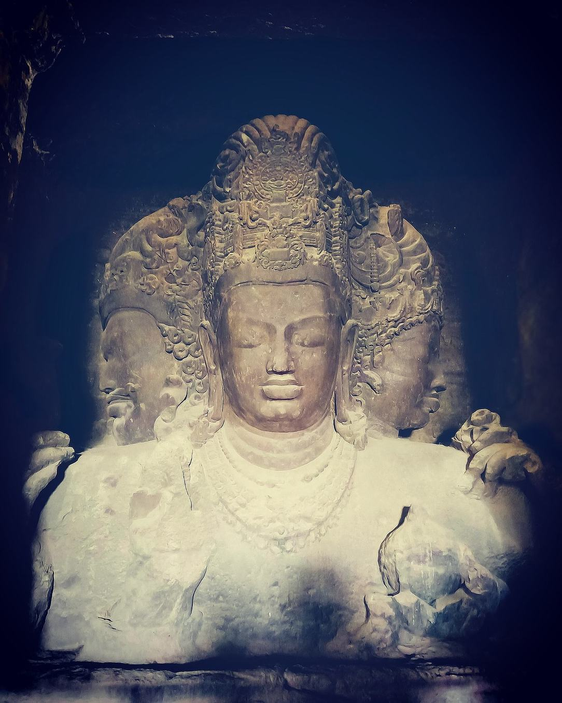
Brahma crea, Vishnu cuida, Shiva destruye para que algo nuevo pueda empezar.
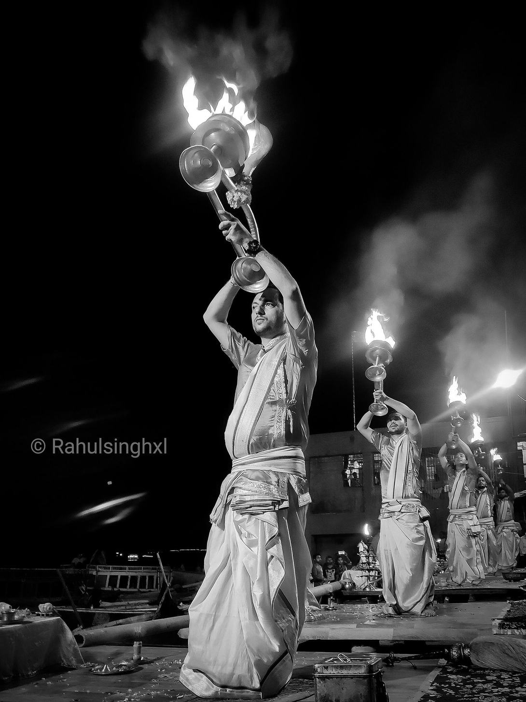
Se llama puja: ofrecer flores, luz y comida, en el templo o en la casa. En la foto, a orillas del río Ganges.
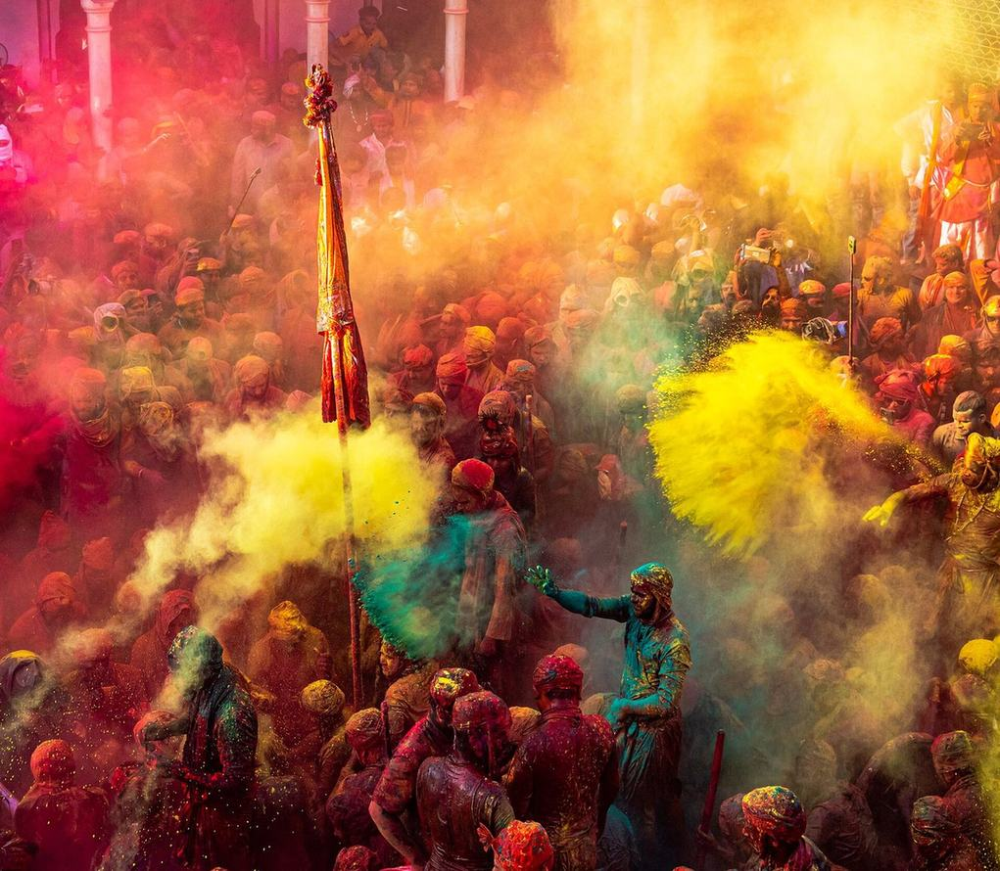
La fiesta de los colores. Llega la primavera y por un día nadie es más que nadie.
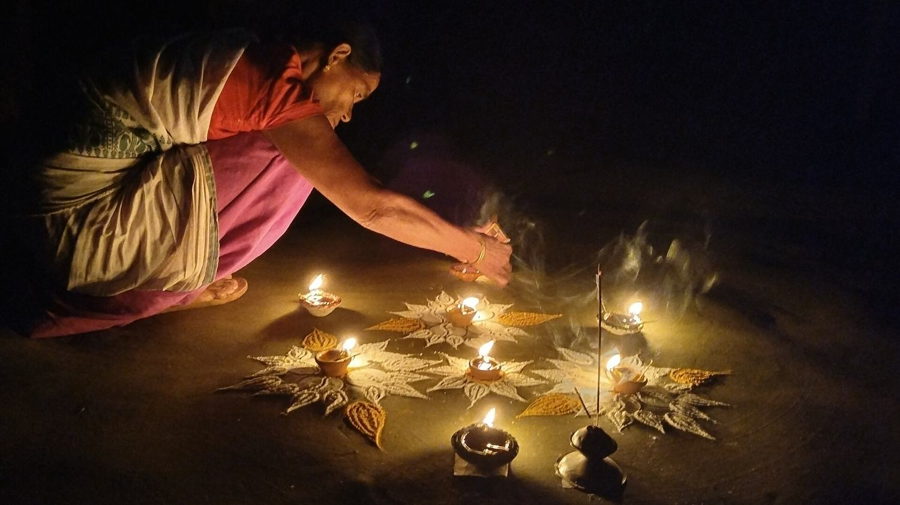
La fiesta de las luces: miles de lamparitas por el regreso de Rama. Es la más conocida fuera de India.
Escena 07 · Derechos humanos · 1 de 2
Las castas
Naces dentro de un grupo social y no te puedes cambiar nunca. Ese sistema choca de frente con los derechos humanos.
Declaración Universal de Derechos Humanos, artículo 1: «Todos los seres humanos nacen libres e iguales en dignidad y derechos.» Un grupo heredado que no se puede cambiar contradice esa frase.
B. R. Ambedkar nació dalit y llegó a dirigir la escritura de la Constitución de India.
Artículo 17 de esa Constitución: queda abolida la intocabilidad y practicarla es delito. Está en vigor desde el 26 de enero de 1950.
Ambedkar, y el preámbulo original de la Constitución de India.
Escena 08 · Derechos humanos · 2 de 2
Libertad de creer
El segundo choque con los derechos humanos: poder creer lo que uno quiera, y poder dejar de creerlo.
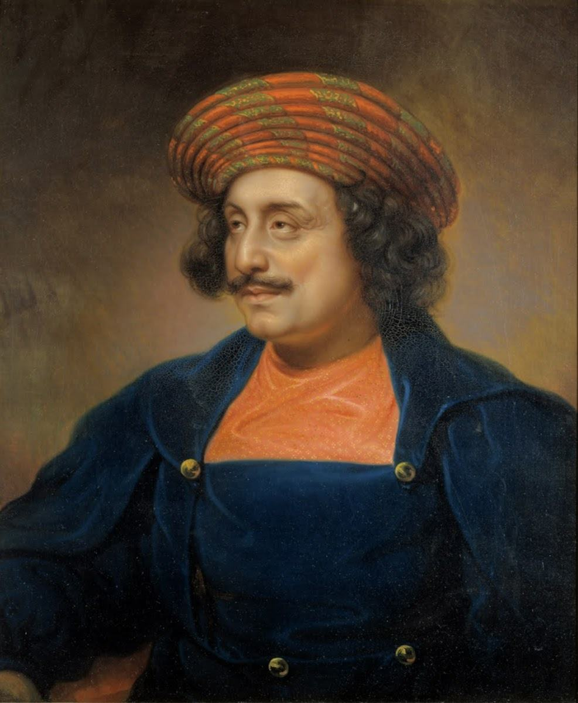
Se llamaba sati: cuando un hombre moría, quemaban a su viuda en la misma hoguera. Un reformador hindú, Ram Mohan Roy, hizo campaña hasta que se prohibió por ley el 4 de diciembre de 1829.
Artículo 25 de la Constitución: todas las personas tienen libertad de conciencia y derecho a profesar, practicar y difundir su religión.
La Declaración Universal, artículo 18, incluye algo más: el derecho a cambiar de religión. En India, varios estados han aprobado leyes que ponen trabas a convertirse a otra fe. La primera fue en 1967.
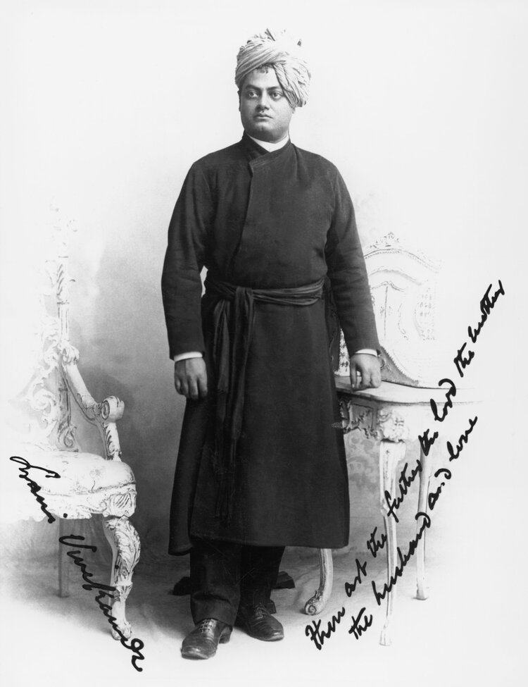
Vivekananda presentó el hinduismo al mundo en un congreso de religiones y pidió tolerancia: dijo estar orgulloso de una religión que enseñó al mundo a aceptar a las demás.
Importante. Ni el sati ni las castas «son el hinduismo». Son costumbres históricas que otros hindúes combatieron y que hoy la ley castiga. Juzgar a 1.200 millones de personas por eso sería como juzgar a todo el cristianismo solo por la Inquisición.
Escena 09 · Justicia social · 1 de 2
Una idea que dio
la vuelta al mundo
Una idea nacida en India terminó ayudando a acabar con la segregación racial en Estados Unidos. Esta es la cadena, paso a paso.
Una palabra antigua del hinduismo: no hacerle daño a ningún ser vivo.
Gandhi la convierte en una forma de pelear sin violencia. Camina 385 km hasta el mar y recoge sal para romper una ley británica. Lo llamó satyagraha.
Viaja a India a aprender ese método y lo usa contra la segregación racial. Al llegar dijo: «A otros países voy como turista; a India vengo como peregrino».
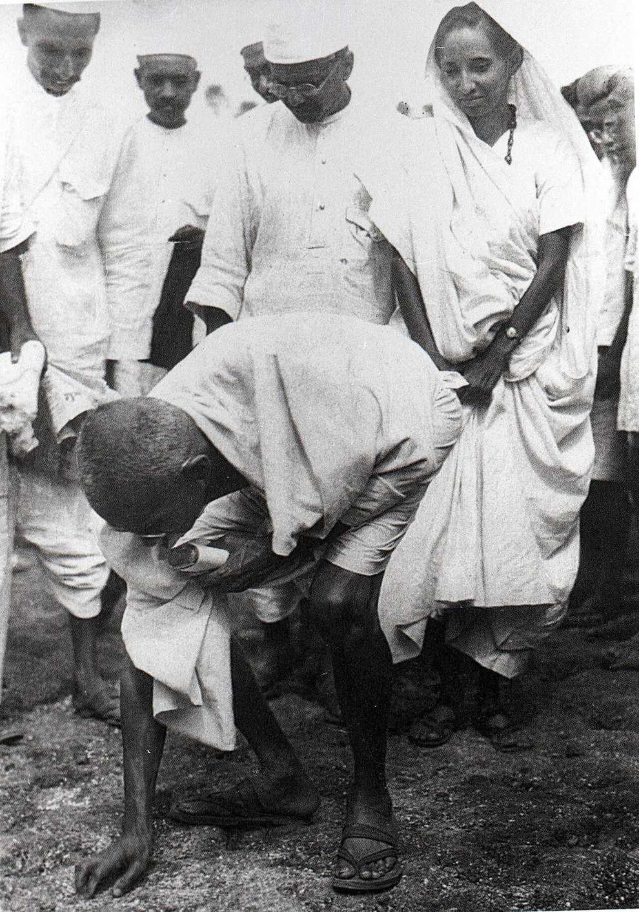
Gandhi en Dandi, 5 de abril de 1930.
Ojo con esto. No es que el hinduismo sea pacifista: dentro del Mahabharata hay una guerra entera. Es que de esa tradición salió un principio que un hombre convirtió en herramienta política, y funcionó al otro lado del mundo.
Escena 10 · Justicia social · 2 de 2
Lo que todavía falta
La ley prohibió la discriminación por casta en 1950. En la práctica sigue pasando, y estos son los números del propio gobierno de India.
Denuncias por delitos contra personas de castas bajas en India, en un solo año (2023)
57.789Casos represados en los juzgados esperando sentencia
307.355India guarda cupos reservados en universidades, empleos públicos y en el Congreso para los grupos que fueron excluidos.
La casta no es solo religión: también es estructura social. Hay dalits cristianos y musulmanes, y la discriminación también los alcanza.
Prohibir algo por ley no lo borra de la sociedad. Entre el papel y la vida real todavía hay una distancia enorme.
Escena 11 · 2019 — 2026
Está pasando ahora
Tres hechos de los últimos años que muestran el peso que tiene hoy esta religión.
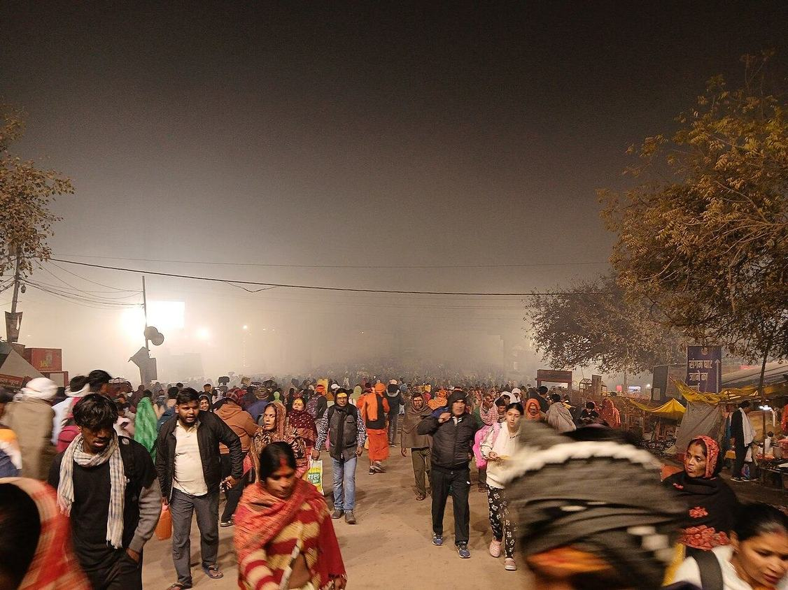
660 millones de personas fueron al Kumbh Mela, en India, durante 45 días. Es la reunión humana más grande de la historia. Van a bañarse en el río, porque creen que limpia.
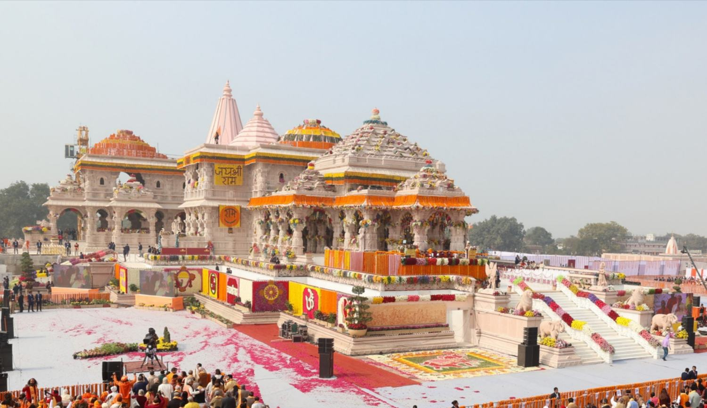
Se inauguró un gran templo a Rama en Ayodhya, en un terreno que hindúes y musulmanes se disputaron durante décadas. La Corte Suprema de India lo resolvió en 2019.
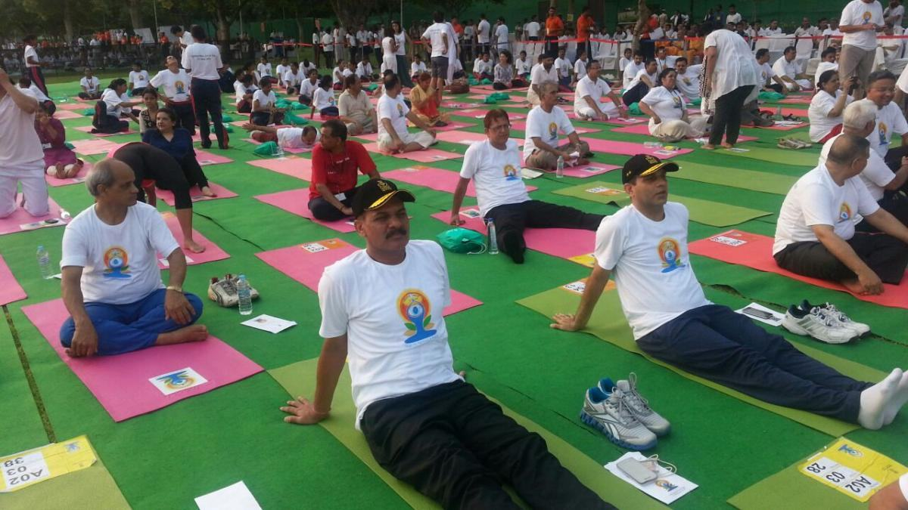
La ONU declaró el 21 de junio Día Internacional del Yoga. Una práctica que nació dentro del hinduismo hoy es una fecha mundial.
Ahora te toca a ti
Quiz · 5 preguntas
Escanea el código con la cámara del celular. Están difíciles a propósito.
- Paso 1
Abre la cámara del celular y apúntala al código.
- Paso 2
Toca el enlace que aparece. Se abre solo, no hay que instalar nada.
- Paso 3
Al final te muestra tu puntaje y te explica cada respuesta.
De dónde salió cada dato
Fuentes
pewresearch.org/religion/2025/06/09/hindu-population-change/
britannica.com/topic/Hinduism
un.org/es/about-us/universal-declaration-of-human-rights
constitutionofindia.net/articles/article-17-abolition-of-untouchability/
sansad.in/getFile/annex/267/AU3650_3LM9tI.pdf
kinginstitute.stanford.edu/india-trip
ddnews.gov.in
belurmath.org · uscirf.gov · biblegateway.com
Las 22 imágenes vienen de Wikimedia Commons, todas de dominio público o con licencia libre (Creative Commons y GODL-India).
Gracias.